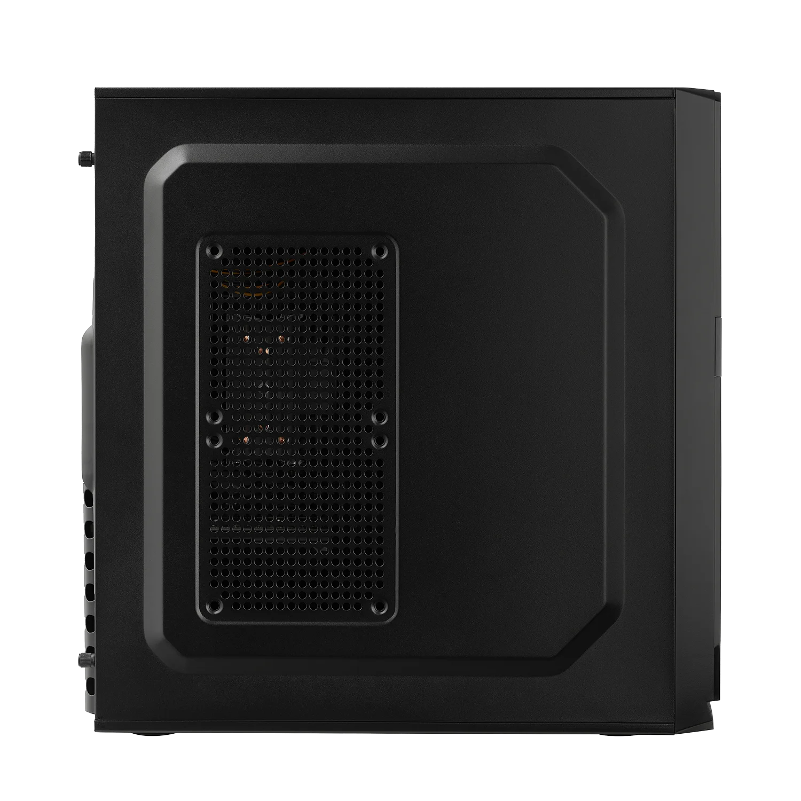
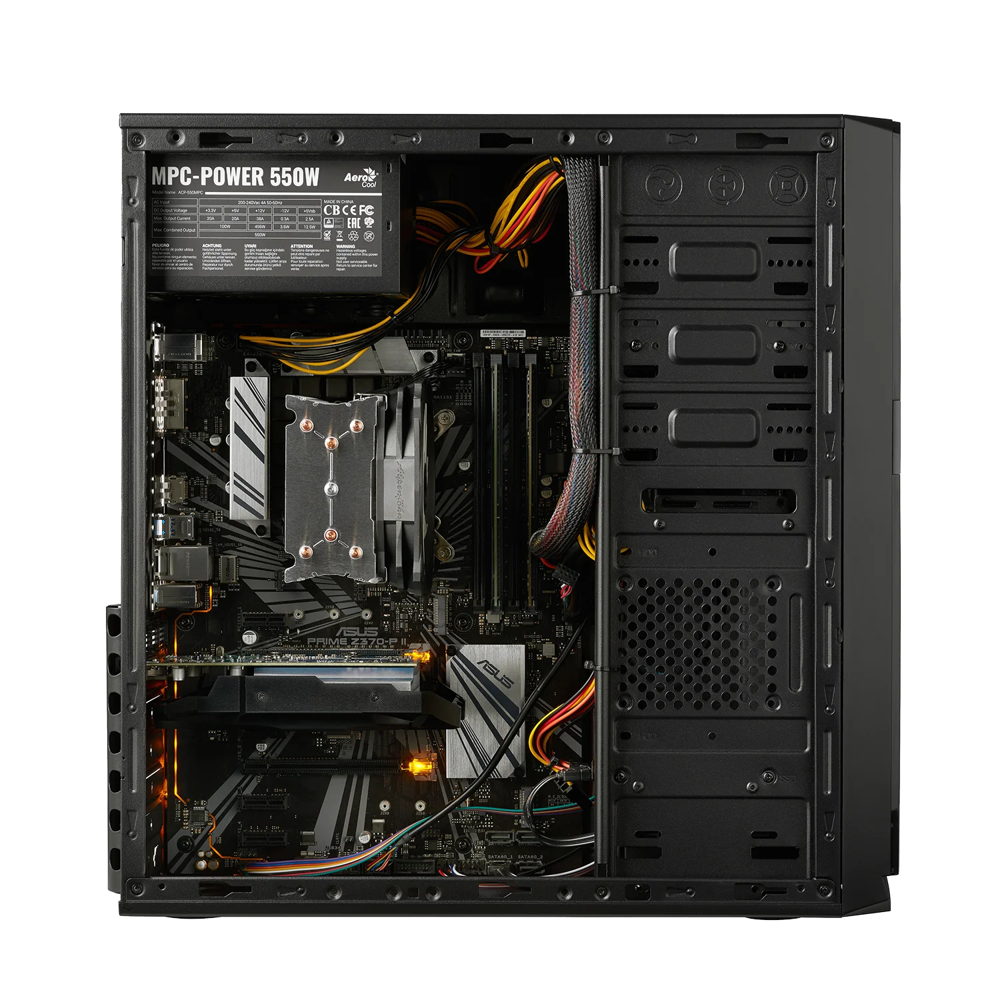
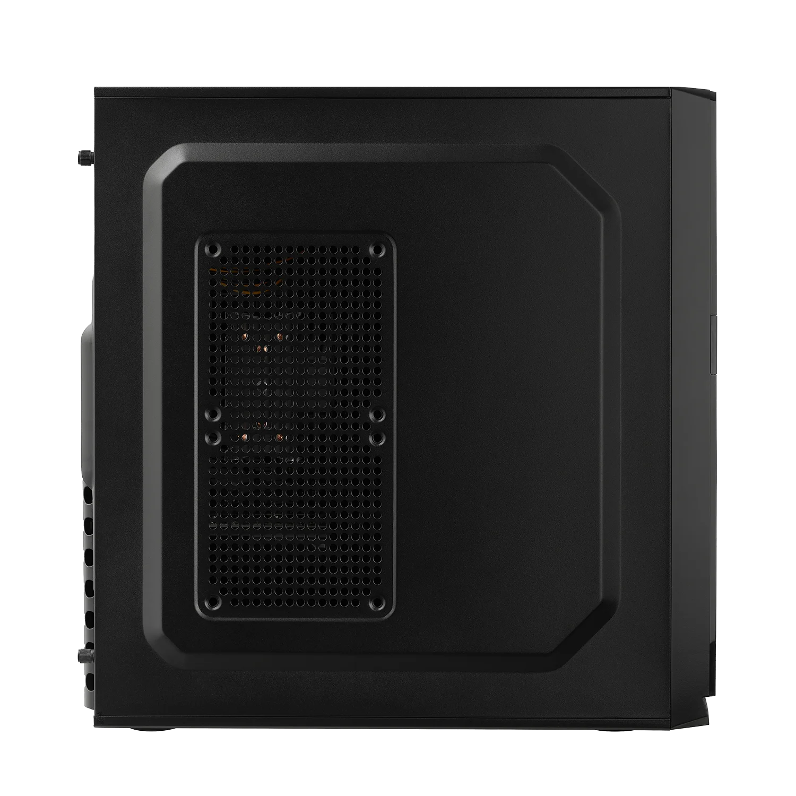
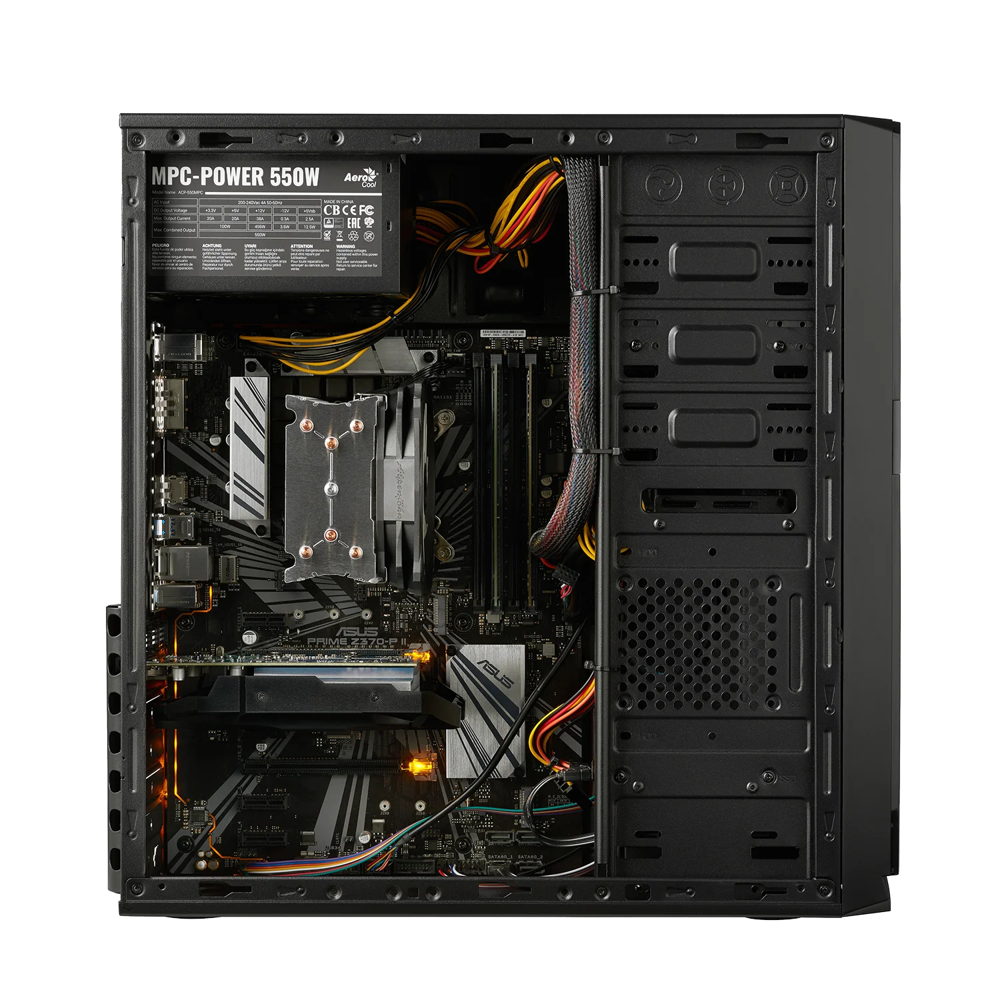

Preis: 589 €
Der MLR Office-PC ist ein leistungsstarker und zukunftssicherer Arbeitsrechner, der speziell für den Einsatz im Home-Office oder Büro konzipiert wurde. Ausgestattet mit einem Intel Core i7-12700K, 1000 GB SSD, ausreichend RAM und integrierter Intel-Grafik bietet er flüssige Performance für Multitasking, UHD-Streaming und gängige Office- sowie Multimedia-Anwendungen. Hochwertige Komponenten, moderne Anschlüsse (u.a. M.2, USB 3.0, HDMI) und eine effiziente Zusammenstellung sorgen für Stabilität und niedrigen Stromverbrauch. Jeder PC wird individuell in Deutschland gefertigt, getestet und ist über einen Konfigurator flexibel anpassbar